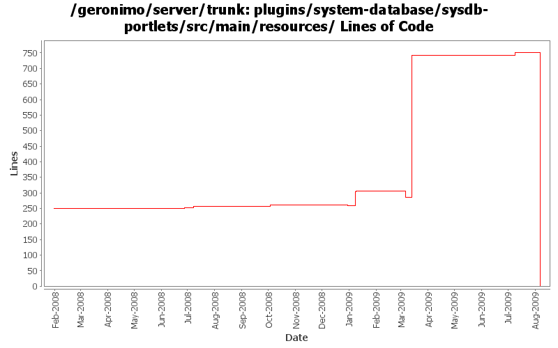

[root]/plugins/system-database/sysdb-portlets/src/main/resources

| Author | Changes | Lines of Code | Lines per Change |
|---|---|---|---|
| Totals | 34 (100.0%) | 874 (100.0%) | 25.7 |
| xuhaihong | 11 (32.4%) | 726 (83.1%) | 66.0 |
| dwoods | 13 (38.2%) | 123 (14.1%) | 9.4 |
| jbohn | 2 (5.9%) | 22 (2.5%) | 11.0 |
| linsun | 1 (2.9%) | 2 (0.2%) | 2.0 |
| gawor | 5 (14.7%) | 1 (0.1%) | 0.2 |
| djencks | 2 (5.9%) | 0 (0.0%) | 0.0 |
GERONIMO-4763 i18n properties files should be converted to ascii at build time. (Patch from Shawn Jiang)
0 lines of code changed in 5 files:
GERONIMO-4706 DB2 XA properties show crash code in database pool portlet (Patch from Viola.lu and Kan Ogawa)
10 lines of code changed in 2 files:
GERONIMO-4517 Apply unified message display style(G-4484) to javascript alert messages. Together with the localization of these messages. Thanks for the patch, Gang Yin
716 lines of code changed in 4 files:
GERONIMO-4507 Admin console should honor the priority of user agent's language setting - patch by Gang Yin
22 lines of code changed in 2 files:
GERONIMO-4507 Admin console should honor the priority of user agent's language setting. Applied patch from Gang Yin.
0 lines of code changed in 1 file:
GERONIMO-4474 Pull out the text in the JSP files to resource bundle files. Applied jsp-localization-fix.patch from Gang Yin.
2 lines of code changed in 2 files:
GERONIMO-4484 Extraction, localization and display of messages generated in portlets. Applied common-message-openejb.patch, common-message-activemq.patch, common-message-debugviews.patch, common-message-plancreator.patch and common-message-sysdb.patch from Gang Yin. Also updated 2 console-testsuite DB tests to match modified message strings.
46 lines of code changed in 2 files:
GERONIMO-4474 Pull out the text in the JSP files to resource bundle files. Patches provided by Gang Yin.
62 lines of code changed in 2 files:
GERONIMO-4225 refactor patch to keep DB Manager -> Run SQL db centric while adding an init-param so we can also have a datasource centric DB Pools -> Run SQL instance from the same code
6 lines of code changed in 2 files:
GERONIMO-4225 Allow Run SQL portlet run sql against any configured data source. Thanks to Michal Borowiecki for the patch.
1 lines of code changed in 1 file:
make log viewer look a little nicer
1 lines of code changed in 1 file:
GERONIMO-4025 Accessibility issues. Applied GERONIMO-4025-DB-Properties_zh.patch from Rex.
2 lines of code changed in 1 file:
GERONIMO-4025 - Accessibility issues. Rex, thanks for the patch and keep them coming.
4 lines of code changed in 2 files:
GERONIMO-3503 DBPool wizzard creates plans only for local-transactions - Patch from Manu George - thanks!
2 lines of code changed in 1 file:
remove duplicated content and fix spelling mistakes
0 lines of code changed in 4 files:
GERONIMO-1775 2nd internationalization patch from YunFeng Ma, with some spelling corrections
0 lines of code changed in 2 files: